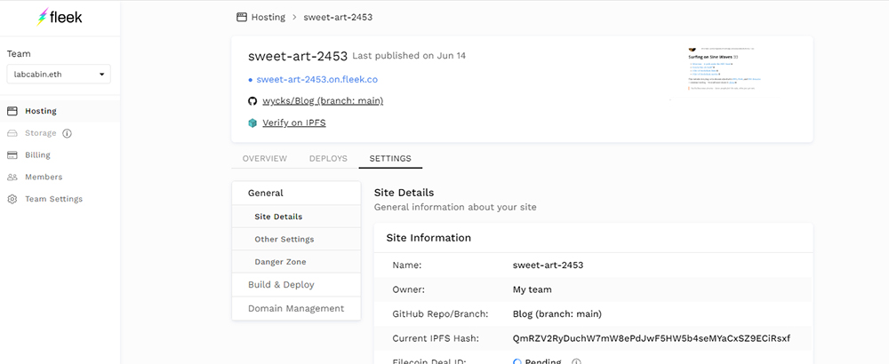
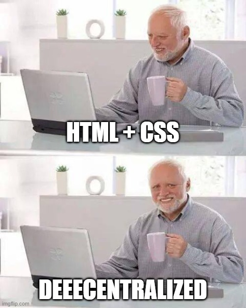

Traversing down the spiral of building a website on the blockchain I had two main goals in mind:
- The website (DNS + Server + Storage) must be on the actual blockchain.
- It must use the absolute minimal amount of tooling, a trust no one approach.
Surprisingly the options for building a decentralized website is fraught with issues, after decades of P2P networks and the mass influx of crypto projects in recent years, the state of building a website on the blockchain is kinda of dismal. So let’s dive into how this site was built, and leave those issues for another day :)
Hosting
This site's files are all hosted using IPFS, a P2P decentralized protocol developed by Protocol Labs that has been around for many years. IPFS is strictly a protocol and has no incentive mechanism for participants to secure and run any actual network. The responsibility of running a network instead is handled by the likes of Filecoin and others, typically build using a consensys mechanism. IPFS is great at serving resilient censorship resistant files, and delivering them at high speed based on user location, similar to how torrents work. But it's not so great for archiving files, which is what most websites meant to be read are doing. In other words, IPFS is a great transport layer, and not a great storage layer.
Managing
The site is managed using Fleek, which to be fair, is doing all the heavy lifting. Fleek has a simple dashboard which makes connecting whatever you build your website with a breeze. Under the hood Fleek is basically integrating a web server with IPFS, and I’m currently using Github to manage this automatically. Fleek also supports other options such as ICP and Arweave. You can view the site files here, https://github.com/wycks/Blog, but it's nothing fancy, just HTML, CSS and images.
DNS
The site’s DNS is managed using an .eth address from the Ethereum Naming Service. Most browsers, like Google Chrome, do not support resolving .eth domains, so the site can also be reached by appending .limo to the end of the URL. ETH.LIMO is a privacy preserving ENS gateway that serves .eth addresses to regular browsers. For example: https://labcabin.eth.limo
But isn't some of this Centralized?
Yes ! There are several centralized areas once you peek under the hood, namely Fleek, various DNS gateways, and Github.
- If Fleek disappears my site and files will die, unless I pay a pinning service. I would also have to switch around the DNS settings for any new setup.
- DNS is being served via centralized domains run by ICANN with Fleek using .co and ENS using .domains, to Fleeks credit they are moving to a fully decentralized system, fleek.xyz.
What Build? 🛠️
The site itself uses a very simple approach, after all it’s just writing..
- Only HTML/CSS
- No build scripts, write directly in the HTML files.
- No external assets
- No need for any local software or build scripts, edit the site in notepad, Github, or directly in any browser.
- You don't even need a web server, it's just HTML files !
This gives the site maximum security with zero reliance on the myriad of tools typically used to build websites. The flexibility of being able to edit them practically anywhere is refreshing. It also has an extremely small footprint with the average page size (without images) being under 9kb ! The page size is the server files size, no need for a 10 MB CMS or MB+ headless CMS with build requirements !
Caveats
Besides the current reliance on centralized DNS/Gateways and Fleek itself, which are all being worked on, the main caveat to this site is it’s currently using Git and Github, both completely unnecessary for managing a blog. Right now it’s the easiest way to connect Fleek and most importantly push updates to IPFS so the correct content is served. I will be looking into removing both Git and Github as Fleek moves to a more decentralized model soon.
